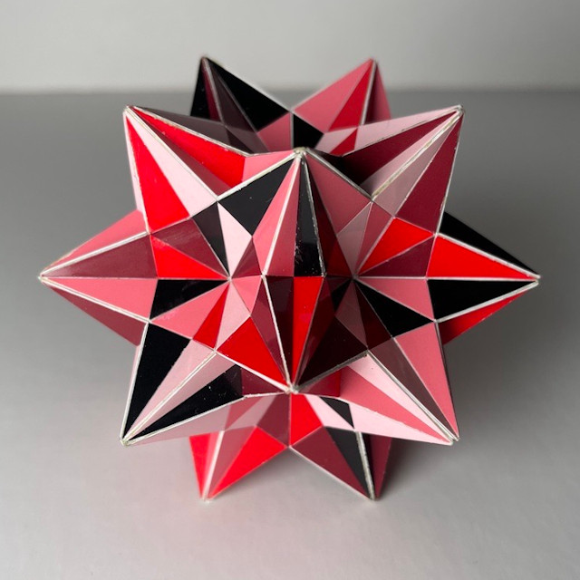

Compound of Ten Tetrahedra

This is a classical compound of ten tetrahedra, it consists of a classical compound of five tetrahedra and its central inversion. One can also see it as a compound of five Stella Octangulae. This polyhedron is also a stellation of the icosahedron. In "The Fifty-Nine Icosahedra" by Coxeter e.a. it is mentioned as the 21st stellation or by cell names "E f1".
I chose to use five colours to give each Stella Octangula its own colour. Triangles with different colours will share a plane, which gives rise to the blinking effect in the 3D model next to the picture. There are different ways to to handle this in the physical model. I chose a mosaic that emphasises the triangles, which I found the most logical way, though it seems it's not common to do it like that. In fact I haven't seen anyone else doing that. The result is really pleasing.
In the picture above one looks into a 2-fold symmetry axis and one can easily see that two light pink edges meet in a straight angle. It is also easy to see the black and dark pink triangles with the top of a tetrahedron sticking out in the same colour. Even though the face with the Bordeaux red colour is so dark that it looks black as well.
This model is more or less 9.5 cm in diameter, which is around 3.75 inches and it was finished in March 2024.
Links
- Thumbnails
- Page with interactive models of compounds of Tetrahedra
- Teun's Polyhedra
- Home
Last Updated
2024-04-09